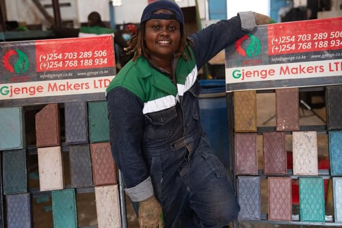
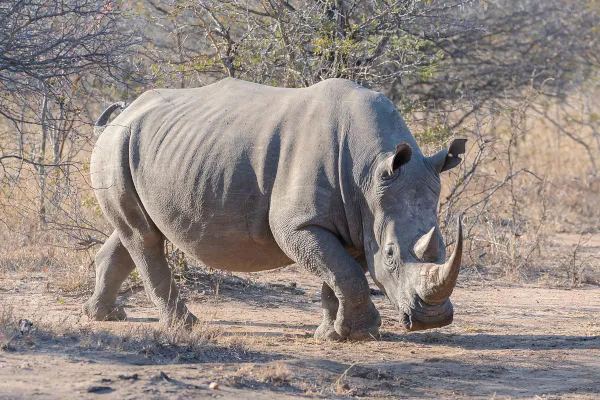

Notícias do Quênia
Acompanhe as principais novidades e histórias que estão impactando o país e o mundo.
Acompanhe as principais novidades e histórias que estão impactando o país e o mundo.

Nzambi Matee desenvolveu um tijolo feito de plástico reciclado que é 5x mais resistente que o concreto tradicional. Sua startup Gjenge Makers já ganhou prêmios internacionais e está ajudando a resolver o problema do lixo plástico na África.
Ler a matéria completa →O país já produz mais de 900 MW de energia limpa através de fontes geotérmicas. Especialistas afirmam que o Quênia pode se tornar um dos exemplos mundiais de transição energética sustentável.
Ler a matéria completa →
Graças a programas de proteção intensivos, a população de rinocerontes negros no país cresceu mais de 20% nos últimos 5 anos. Um grande avanço para a biodiversidade africana.
Ler a matéria completa →